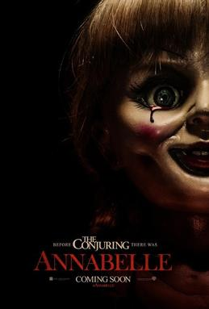

Blog do Medo
Blog do MedoAnnabelle
Em uma casa recém-formada, o casal John e Mia vive o início do que parecia ser uma vida tranquila, marcada pela espera de seu primeiro filho. Como um gesto de carinho, John presenteia Mia com uma rara boneca antiga: Annabelle, vestida de branco, silenciosa demais para ser apenas um objeto decorativo.
O que começa como uma presença curiosa dentro do lar rapidamente se transforma em um foco de inquietação. Após uma invasão violenta de uma seita satânica na vizinhança, algo parece ter sido despertado — ou atraído — pela boneca. Sons inexplicáveis, sombras que não pertencem ao ambiente e uma sensação constante de que algo observa cada movimento começam a corroer a paz do casal.
Aos poucos, a casa deixa de ser um refúgio e passa a se comportar como um espaço contaminado por algo que não deveria estar ali.
Avaliação
Experiência geral
O filme constrói sua tensão de forma gradual, apostando menos em sustos fáceis e mais em uma atmosfera constante de desconforto. A sensação de que algo está errado nunca desaparece completamente, mesmo nos momentos mais calmos.
Elementos técnicos
Clima e direção: O uso de ambientes fechados e iluminação fria reforça a sensação de isolamento e vulnerabilidade.
Som e atmosfera: O silêncio é tão importante quanto os sustos, criando expectativa constante.
Reviravolta: Funciona dentro da proposta do filme, mantendo o mistério sem quebrar o ritmo da narrativa.
Atuações: Entregam bem o peso emocional da história, principalmente nas cenas de desgaste psicológico do casal.
Impressão final
Annabelle funciona melhor como um estudo de atmosfera do que como um filme de sustos diretos. Ele aposta na ideia de que o medo não precisa aparecer o tempo todo — basta existir a possibilidade de algo estar presente.
Nota final

- 1h e 39min
- Terror / Sobrenatural
- Direção: John R. Leonetti
- Roteiro: Gary Dauberman
- Elenco: Annabelle Wallis, Ward Horton